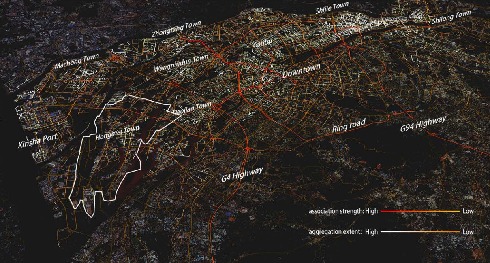
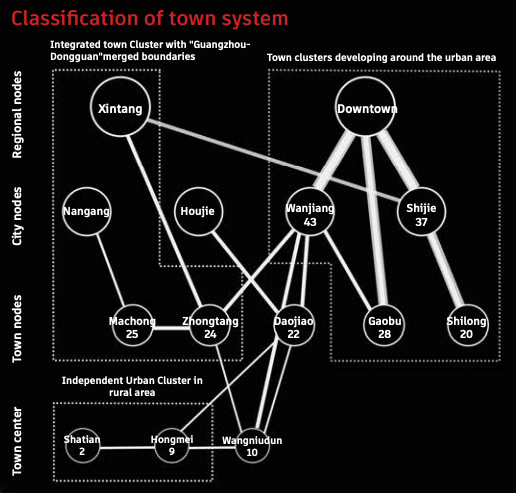
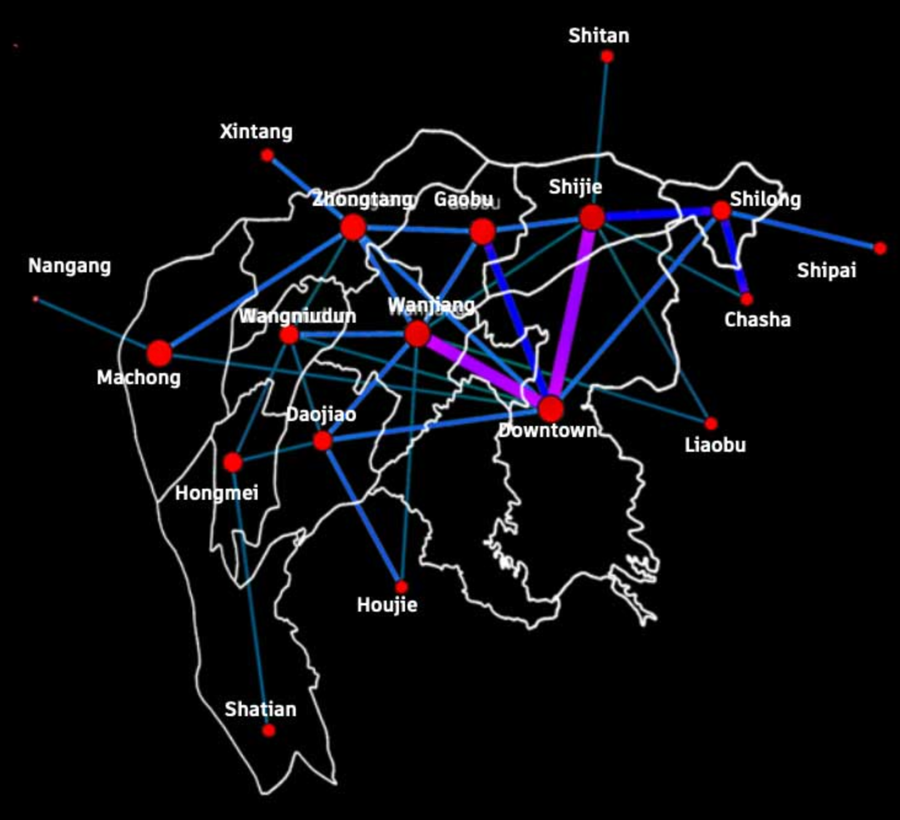
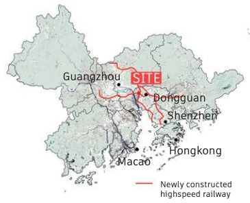
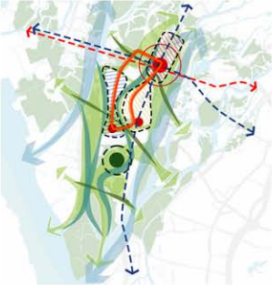
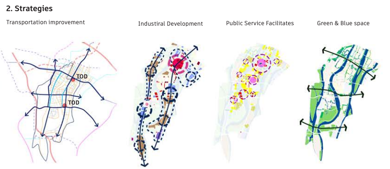
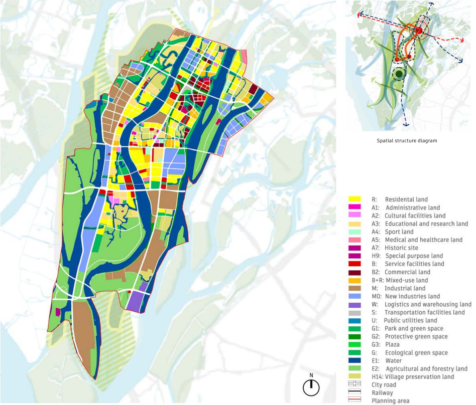

两条新建的高铁线在东莞洪梅镇交汇，为这个地方带来发展机遇。

项目区位图
规划方案围绕高铁站进行TOD开发（下图红色圆圈），引入外部资源，增强区域合作。打造内环增强内部活力（下图橙色环）。构筑蓝绿生态基底（下图蓝色和绿色的箭头）形成差异化城市景观。

土地利用规划结构
新的土地利用规划体现了交通优化、产业发展、公服设施补齐和生态保护四个方面的规划策略。

土地利用规划策略

土地利用规划图
This project simulates travel patterns based on millions of origin-destination pairs, providing granular measurements of connectivity and density across urban areas. To address the low density of initial OD data for topological forms and the issue of not reflecting actual spatial patterns, we propose employing path simulation for in-depth analysis. By requesting map APIs to obtain simulation results and calculating road usage across Dongguan's 12 towns based on 200,000 travel records, we identify each town's actual pedestrian gathering scale, boundaries, and connectivity. The analysis provides crucial reference for project positioning and transportation network optimization.
Visualization of Travel Simulation
Analysis of Regional Connectivity Results
Regional Connectivity Topology Map